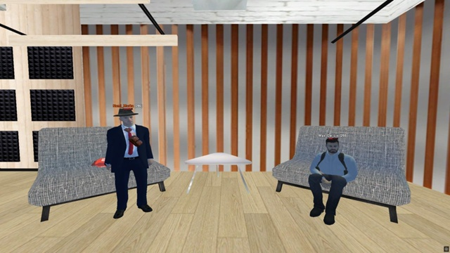
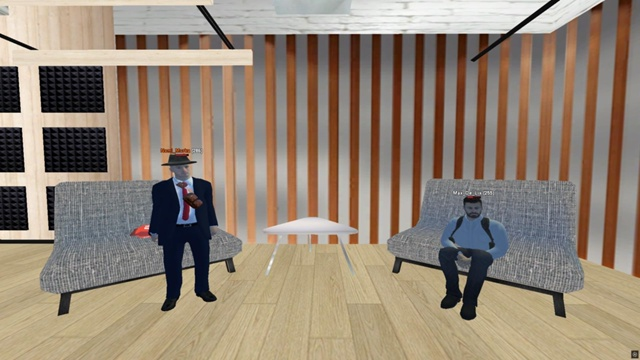

📌 Последние публикации
📣 Объявление: набор в редакцию
ТРК «Ритм» открывает двери для тех, кто умеет не просто писать — а создавать атмосферу.
🔸 Формат: RP/IC, интервью, эфирные посты, мем-блоки, архивы
🔸 Требования: стиль, дисциплина, авторская подача
🔸 Языки: украинский, русский, можно оба
📩 Заявки принимаются через эфир или напрямую в редакцию. Не нужно резюме — нужно желание делать лучше.
Ритм — это не просто медиа. Это сигнал. Услышанный, принятый, оформленный.
ТРК «Ритм» открывает двери для тех, кто умеет не просто писать — а создавать атмосферу.
🔸 Формат: RP/IC, интервью, эфирные посты, мем-блоки, архивы
🔸 Требования: стиль, дисциплина, авторская подача
🔸 Языки: украинский, русский, можно оба
📩 Заявки принимаются через эфир или напрямую в редакцию. Не нужно резюме — нужно желание делать лучше.
Ритм — это не просто медиа. Это сигнал. Услышанный, принятый, оформленный.
📡 Эфир с замом ТРК
Max De Lix

🎙 В эфире — Макс Де Ликс
Max De Lix

🎙 В эфире — Макс Де Ликс
— Приветствуем вас!
— Здраствуйте область!
— Думаю не будем медлить етот вечер будет особенно интересным.
— Согласен с вами, колега
— Вы когда - нибуть чуствовали, что вас никто не слушает?
— Знаете за все время моей долгой службы и работы жизнь достаточно меня потрепала. Но больше всего это чусто я запомнил с поста Генерала Министрерства обороны.
— Что вас держит в этом всём, когда всё горит?
— Держут меня тут люди, которые со мной с первого моего государственого поста, за что я им благодарен очень сильно.
— Как вы реагируете на публичную критику?
— Позитивно, для меня лично критика как характеристика человека, все не идеальны
— Что может вас вывести из себя за 10 секунд?
— За 10 секунд выводит из себя младший состав когда обступают тебя вокруг и орут про отчет на столе.
— Вы умеете отключаться - или все тащите на себе?
— Везде где я служил большенство ответствености я брал на себя.
— Что вы умеете делать так, как никто другой?
— Как никто другой я умею решать конфликты словами, это моя сильная сторона.
— Вы вообще хотели быть замом - или просто не было выхода?
— Когда мне написал мой хороший друг сегодня главный редактор и предложил занять такой высокий пост, я не думая согласился.
— Вы когда - нибудь чувствовали, что система против вас?
— Да, такое чуство сложилось за такой долгий промежуток времени особено когда на тебя давит начальство выше, я думаю вы понимаете о ком я.
— Как вы относитесь к Гл. Редактору?
— Ну тут я отвечу фразов "великого" политика всех времен и народов "Этот глав редактор лучший худший глав редактор которого я видел за свою жизнь". Отсылку кто то уловил?
— Упустим етот момент. Что бы вы сделали, если бы никто не мешал?
— Я бы пошел в ФСБ и задержал весь список форбс, ведь там все преступники.
— Что вы делаете, когда всё рушится, а все ждут от вас спокойствия?
— Отвечу словами другого не менее известного политика "Я всегда спокоен как мухи на мертвом удаве". За столько времени вывести меня из себя не простая задача в любой ситуации.
— Хмм. Вас когда-нибудь называли тираном - и вы такие: Ну, не без этого?
— Да, когда я был полковников МВД а сегоднешний глав редактор генералом, он заставлял меня быть строже чем того требует ситуация, потому что считал что рядовые этого заслужили.
— Уверенны в этом?
— На все 101 процентов.
— Хорошо, попрошу слушателей задать вопросы которые они б хотели услишать в эфире. Вы любите Мурку?
— Я его уважаю и ценю как хорошего друга и товарища который со мной везде таскаеться, кхм... хотел сказать всегда поддержит.
— Спасибо и на том. Сказать правду но потерять что-то или обмануть и получить выгоду?
— Если можно я промолчу и останусь как говорила моя учительница физики - в состоянии спокойствия
📡 Это был эфир ТРК «Ритм».
Говорили честно. Слушали внимательно.
Сигнал принят.
← Назад на главную
— Каких вы б хотели упомянуть знакомых с других организаций?
— Много хороших знакомых остались в других организациях, всех не упомниш но могу выделить: Андрея Праковиха, Юрия Сыдора, Рататуя, Кирилла Уайлда, Стива Адамса, Андриано монтато, Глеба Найтмара, Андриана Якимова и других.
— Странный вопрос, может вы познаете в нем смысл. Вы любите бетон?
— Бетон один из величайших изобретений человечества он сделал огромный вклад в историю человечества.
— Вопрос от меня - знаете ли вы 'Приходьков' у вас есть к нему чуства?
— Это местный гомосексуал проживающий на мусорке возле 24.7 "Корзинка" в Лыткарено. Хороший был человек, мент пока не начал бухать.
— Понял вас.
— Это все алкоголь с людьми делает. Не злоупотребляйте алкоголем граждани!
— Что бы вы добавили на последок?
— Хочу добавить что жду всех в ТРК "Ритм" у нас тут всегда весело и дружный колектив. Также передаю приветы - колективу высшего руководства по стране за нашей областью а конкретно - Приходьку, Родриго, Андрею, Арсению и Ольге. Всех благ, был рад разбавить обстановку на радио в такое время.
— Это был эфир телерадиокомпании Ритм.
📡 Это был эфир ТРК «Ритм».
Говорили честно. Слушали внимательно.
Сигнал принят.